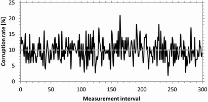
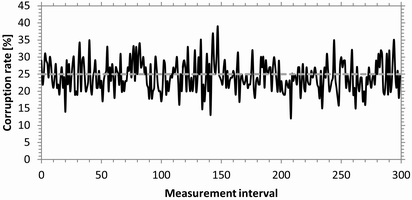
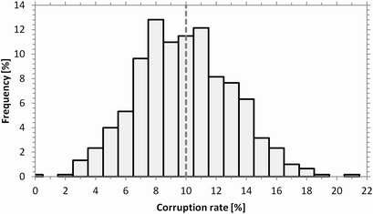
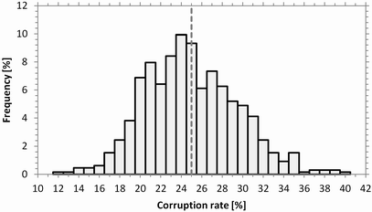

Corruption Rate
The effect of configured corruption rates is tested without configured delay, with UDP and with an average packet rate of one packet per ms.
Each corruption rate result value is derived from a measurement interval of 100 packets. The value indicates the percentage of packets having a bit error.
The following figures show the measured corruption rates for the first 300 measurement intervals (30000 packets). The configured corruption rates are 10 % and 25 %, as indicated by the gray dashed lines.

Corruption rate vs. measurement interval (10 % corruption configured)

Corruption rate vs. measurement interval (25 % corruption configured)
The following figures show the distribution of the corruption rates over all measured intervals.

Corruption rate distribution (10 % corruption configured)

Corruption rate distribution (25 % corruption configured)